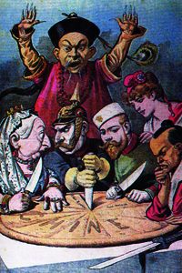
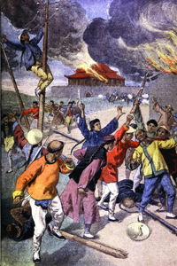
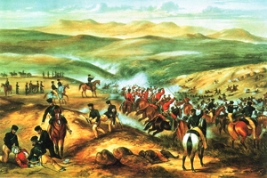
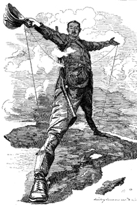

Lezione 17  La corsa alla spartizione del mondo
La corsa alla spartizione del mondo

-
200
680
-
200
720
-
390
500
-
350
475
-
190
160
-
130
650
-
170
700
-
200
770
-

CINA
In questa illustrazione francese di fine Ottocento, una personificazione dell'Impero cinese si oppone alla spartizione del territorio della Cina, raffigurata come una torta: a dividersene le fette stanno i rappresentanti delle maggiori potenze occidentali (Prussia, Inghilterra, Russia, Francia) e l'imperatore del Giappone.

CINA
La società segreta dei Pugni di concordia e Armonia, denominata in inglese Boxers ("Pugili") assume il comando dei malcontenti anticristiani e anti imperialistici che serpeggiano nella Cina dell'Ottocento a causa delle eccessive ingerenze occidentali nella politica e nel commercio interno dell'impero cinese.
In questa illustrazione tratta dal settimanale francese Le petit Journal, i Boxers sono raffigurati come feroci saccheggiatori ed assassini.
SUDAFRICA
Il possesso delle miniere di oro e diamanti del Transvaal e dell'Orange è all'origine della guerra (1899-1902) che oppone i coloni olandesi ("boeri") e quelli inglesi nella cosiddetta guerra anglo boera: in questo dipinto ottocentesco ne vediamo un episodio cruento che contrasta con il maestoso e verdeggiante paesaggio sudafricano.
EX RODHESIA
Cecil John Rhodes, che ha dato il nome allo stato della Rhodesia da lui fondato, in una illustrazione satirica di Edward Linley Sambourne, che ironizza sul sogno del magnate inglese di collegare tutta l'africa da Il Cairo a Città del Capo con una unica linea telegrafica.USA
Anche gli Stati Uniti, che mirano ad accrescere la potenza marittima, sviluppano una enorme flotta militare per il controllo degli oceani Atlantico e Pacifico. Creano basi navali nei Caraibi e nel Pacifico.TRANSIBERIANA
Tra il 1891 e il 1916 la Russia costruisce la ferrovia Transiberiana, che collega Mosca a Vladivostok, l'Europa all'Estremo Oriente, passando per la Siberia.
Con una lunghezza di 9.288 Km, è ancora oggi la ferrovia più lunga al mondo.CINA
Alla fine dell'Ottocento la Cina è uno Stato formalmente indipendente, ma fortemente indebitato e controllato da potenze straniere.
Russia, Giappone, Germania, Francia e Gran Bretagna hanno esteso la loro influenza nelle diverse province cinesi. A un primo tentativo di reazione e riorganizzazione interna da parte dell'imperatore, segue l'azione di un'organizzazione segreta chiamata "Società dei pugni giusti e armoniosi", conosciuta in Europa come organizzazione dei "Boxers".
La Rivolta dei Boxers del 1899-1901 porta all'occupazione di Pechino, nel tentativo di tornare alla "Vecchia Cina", chiusa agli stranieri. La rivolta viene bloccata da un decisivo intervento internazionale cui partecipano Stati Uniti, Austria, Francia, Germania, Italia, Giappone, Russia, Gran Bretagna.PORT ARTHUR
Tra il 1904 e il 1905 si svolge la guerra russo-giapponese.
Nel 1894 il Giappone aveva strappato alla Cina la Corea, occupato l'isola di Formosa (Taiwan) e la provincia cinese della Manciuria. Nel frattempo la penetrazione russa verso Oriente era arrivata alla sponda dell'oceano Pacifico.
Interessi imperialistici contrastanti portano allo scontro tra Russia e Giappone, poiché la prima penetra in Manciuria e ha mire espansionistiche sulla Corea.
Dopo la rottura delle relazioni diplomatiche da parte dei russi, nel 1904 i Giapponesi attaccano la flotta russa di Port Arthur, e la assediano per un anno. I russi, sconfitti, cedono al Giappone la Manciuria e parte dell'isola di Sakhalin.